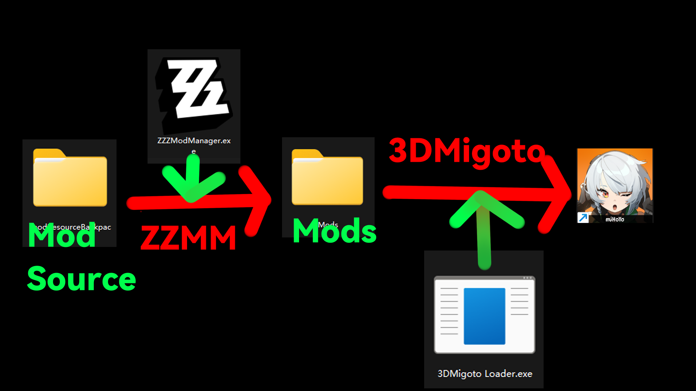

本程序通过代理Mods文件夹的方式来实现mod的加载，通过动态调整mod文件夹内部的文件来实现mod的加载， 所以请不要在mod文件夹内添加任何文件！将你的mod添加到modSource文件夹中即可 （默认为同目录下的modSource文件夹）。
大部分模组管理器通过读取Mods文件夹内的文件来实现mod的加载，请在这里指定你的Mods文件夹，从而让本程序能够正确管理你的mod。对于3dmigoto来说，这个文件夹通常在它的同目录下，名字为Mods。对于XXMI，它位于类似于 XXMI\ZZMI\Mods 的位置。
modSource 文件夹是你应该将mod放入的地方而不是Mods文件夹(默认为Mods同目录下的modSource文件夹)，本程序通过代理Mods文件夹的方式来实现mod的加载，所以请不要在Mods文件夹内添加任何文件！将你的mod添加到modSource文件夹中即可。
本程序通过动态调整mod文件夹内部的文件来实现mod的加载，所以请不要在mod文件夹内添加任何文件！将你的mod添加到同目录下的modSource文件夹中即可。
是否将当前mod文件夹内的mod移动到modSource文件夹中？
如果你仍然不清楚 modSource 和 Mods 文件夹之间的关系，请点击 手动移动，并且将你的 mod 手动移动到 modSource文件夹中。
启动程序的时候也一并启动游戏和modLoader(需要在进阶设置设置游戏目录和modLoader目录)
一般而言，模组加载器常常是叫做3dmigoto.exe 的文件，本程序通过获取这个文件的路径来实现自动打开模组加载器。如果你改变了模组加载器的刷新的快捷方式，程序会尝试通过读取在同目录下的ini文件来获取刷新的快捷方式(暂时未实现，建议保持快捷键为F10)。
获取游戏路径以便于自动打开游戏，如果你不想使用这个功能，可以选择取消。稍后你可以在设置中重新设置游戏路径。
当选择/取消选择mod时自动应用配置(可能带来轻微卡顿)
启用 应用mod时 将会自动在绝区零中激活刷新
启动程序时是否使用管理员权限(需要重启程序生效),这样，在启动游戏和模组加载器时，将不会弹出UAC提示框。
更多的设置可以在设置页面中找到，你可以在那里重新设置你的Mods文件夹，modSource文件夹，模组加载器，游戏文件，自动化设置，管理员权限等。